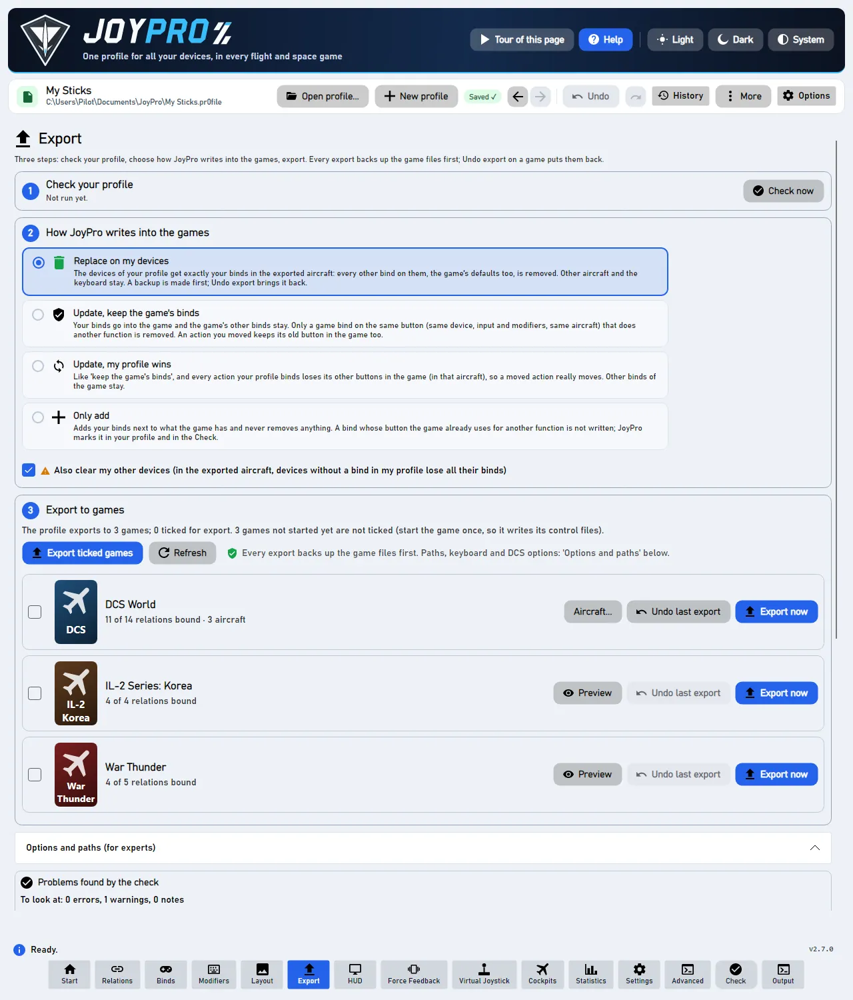

확인 기능은 내보낸 뒤 게임이 보게 될 모습 그대로 프로필을 살펴보고, 거기서 무엇이 잘못될지 보여 줍니다. 같은 기체에서 두 가지 일을 하는 버튼, 버튼 두 개에 들어가는 명령, 게임이 받아들이지 않은 바인딩 등입니다. 모든 카드는 게임 용어(기체, "장치 · 버튼", 게임이 부르는 명령 이름)로 설명하고, 되돌릴 수 있는 해결 방법을 제시합니다.
flowchart LR A["확인<br/>(아래쪽 막대 또는<br/>지금 확인)"] --> B["카드:<br/>오류, 경고,<br/>참고"] B --> C["카드마다: 수정,<br/>관계 열기,<br/>또는 무시"]
초보자용
#확인 실행하기
아래쪽 막대에서 확인을 누르세요(또는 내보내기 페이지의 지금 확인). 결과는 내보내기 페이지의 검사에서 발견된 문제 아래에 "살펴볼 항목: 오류 0개, 경고 1개, 참고 0개"처럼 표시됩니다.



빨간 카드는 오류입니다: 내보내기 전에 고치세요. 그러지 않으면 게임이 원하지 않는 동작을 합니다. 주황색 카드는 경고입니다: 한번 살펴볼 만하지만, 괜찮은 경우가 많습니다. 참고는 무해합니다.
#카드 읽는 법
- 제목은 무엇이 잘못되었는지 알려 줍니다: "버튼 하나가 두 가지 일을 합니다", "버튼 두 개에 같은 명령", "DCS World에 기록되지 않음".
- 버튼: "Throttle - HOTAS Warthog · BTN 22 ('Gear Up/Down')"처럼 장치, 버튼, 그리고 괄호 안에 관계가 표시됩니다.
- 한 문장으로 게임에서 일어나는 일을 설명합니다: "F-16C에서 두 버튼 모두 'Display Management Switch - Down'을 실행합니다. 보통은 둘 중 하나만 원합니다."
- 수정 방법: 체크 표시가 있는 파란 버튼이 JoyPro의 추천입니다. 나머지는 대안이며, 더 보기에 다른 방법이 있습니다. '
' 열기 는 카드의 명령이 정확히 표시된 관계를 보여 주고, 뒤로(Alt+Left)를 누르면 카드로 돌아옵니다.
모든 수정은 Ctrl+Z로 되돌릴 수 있습니다.
고급
#섹션과 수정 방법
오류가 먼저, 그다음 경고, 그다음 참고 사항이 나옵니다. 검색은 관계, 기체, 버튼, 명령으로 카드를 찾고, 종류 필터는 한 종류만 보여 줍니다. 정렬(관계별, 기체별, 게임별, 확신도별)은 카드를 묶어 주기도 합니다.
| 섹션 | 종류 | 게임에서 의미하는 것 | 수정 방법 |
|---|---|---|---|
| 버튼 하나가 두 가지 일을 합니다 | 오류 | 입력 하나가 두 관계에 바인딩되어 있고, 두 관계 모두 같은 기체의 명령이 켜져 있습니다. 한 번 누르면 둘 다 실행됩니다. | 이 버튼에 'X'만 유지(다른 관계에서는 그 기체를 끔), 무시; 더 보기: 'X'을(를) 다른 버튼으로 이동, 모두 끄기 |
| 버튼 하나가 명령 두 개를 실행합니다 | 오류 | 관계 하나에 같은 기체(또는 게임)의 명령 두 개가 켜져 있습니다. | 'A'만 유지, 무시; 더 보기: 하나를 다른 버튼으로 이동, 모두 끄기 |
| 기타 오류 | 오류 | 예를 들어 일반 버튼이기도 한 수정키 버튼. | 카드에 나온 대로 |
| 버튼 두 개에 같은 명령 | 경고 | 기체의 명령 하나가 두 관계에서 켜져 있습니다. 게임에서는 그 명령이 버튼 두 개에 들어갑니다. | X에만 유지(JoyPro의 추천), 무시; 더 보기: 두 버튼 모두에서 끄기 |
| 복사된 관계 | 경고 | 가져오기가 같은 버튼에 관계의 사본을 만들었습니다. | 하나로 병합; 복사된 관계 모두 병합 |
| 게임에 기록되지 않음 | 경고 | "추가만"이 바인딩 하나를 빼놓았습니다. 게임이 그 버튼을 다른 데 쓰거나 게임에 빈자리가 없기 때문입니다(Elite: Primary와 Secondary가 이미 사용 중). | '업데이트'로 내보내 교체하기, 다른 버튼으로 이동, 그대로 두기 |
| 참고 | 참고 | 무해하지만 살펴볼 만합니다. |
- 무시는 바인딩을 그대로 두고 카드를 숨깁니다(프로필에 저장, Ctrl+Z 한 번으로 취소). 그 명령이 버튼 하나에 더 들어가면(버튼에 관계가 하나 더, 관계에 명령이 하나 더) 카드는 저절로 다시 나타나며, 신규 표시와 함께 "다시 표시됨: 이제 ...에도 있습니다"라고 나옵니다. **무시한 경고 (n)**에는 숨긴 카드가 다시 표시와 모두 다시 표시와 함께 나열됩니다.
- 원인: 어떤 변경이 문제를 일으켰는지 프로필 기록 내역이 알면 카드에 표시됩니다("원인: AI로 관리 (관계 변경 366개), 21.10.2026").
- 알 수 없는 명령: 기체의 현재 목록에 더 이상 없는 명령(오래된 모듈 버전, 설치되지 않은 모드)은 "알 수 없는 명령"으로 표시됩니다. 더 보기에 알 수 없는 명령 제거와 비슷한 항목 찾기가 있습니다.
- 탈것 종류: 기체 목록이 없는 게임(War Thunder, MSFS, Arma)에서는 비행기의 스로틀과 헬기의 콜렉티브가 한 축에 있어도 오류가 아닙니다. 같은 탈것 종류의 동작끼리만 충돌합니다.
게임에서: 각 카드가 게임에서 뜻하는 것
- 버튼 하나가 두 가지 일을 합니다: 그 기체에서 한 번 누르면 두 명령이 모두 실행됩니다(예: "Gear"와 "Weapon release"). 수정하면 그 기체에서 버튼이 한 가지 일만 하고, 다른 기체는 바뀌지 않습니다.
- 버튼 두 개에 같은 명령: 그 기체에서 두 버튼이 같은 일을 합니다. 두 번째 버튼을 다른 용도로 쓰려던 것이 아니라면 무해합니다.
- 게임에 기록되지 않음: 게임이 그 버튼에서 여전히 자체 기능을 실행합니다. "'업데이트'로 내보내기"는 다음 내보내기 때 그것을 교체하고, "그대로 두기"는 게임의 기능을 남기고 카드를 숨깁니다.
- 알 수 없는 명령: 게임이 무시할 줄입니다. 지워도 게임에서는 아무것도 바뀌지 않습니다.
기술 정보
#내부 작동 방식
- GUI:
ValidateProfileCommand(아래쪽 막대의 확인, 내보내기 페이지의 지금 확인)가engine profile validate --fail-on-warnings false를 실행한 다음 중복 및 충돌 보고서를 실행하고 카드를 만듭니다(MainWindowViewModel.CheckCards.cs,MainWindowViewModel.Duplicates.cs,Models/CheckIssueModels.cs,Views/Controls/CheckProblemsPanel.axaml). 카드는 페이지로 나뉘며(섹션마다 상세 5개, 간단 25개, 더 표시), "더 보기"와 세부 정보는 열 때만 만들어지므로 오류가 3000개여도 빠르게 반응합니다(CheckResponsivenessTests: 모든 단계 400 ms 미만). - 엔진:
relations conflicts(engine\EngineCheckConflicts.cs)가 validate의 두 오류를 자세히 보여 줍니다:InputConflicts(키game:plane§device§input[§modifier])와ActionConflicts(키game|plane|relation). 수정:--keep <relation>,--keep-action <id>,--off,--ignore(Pr0file.KeptDuplicates에 저장;--list-kept,--forget-kept [--keys]),--remove-actions.relations duplicates는 같은 명령이 버튼 두 개에 있는 경우와 사본을 찾고,export-marks list는 내보내기가 빼놓은 바인딩을 보여 줍니다. 수정 하나는 프로필 버전 하나(실행 취소 한 단계)입니다. - 텍스트 게이트:
CheckTextGate는 카드 텍스트에 ID, "node" 같은 내부 용어가 보이면 테스트를 실패시킵니다.
엔진 명령: engine profile validate, engine relations conflicts, engine relations duplicates, engine export-marks list, engine export-marks dismiss. 참조: 확인(참조).